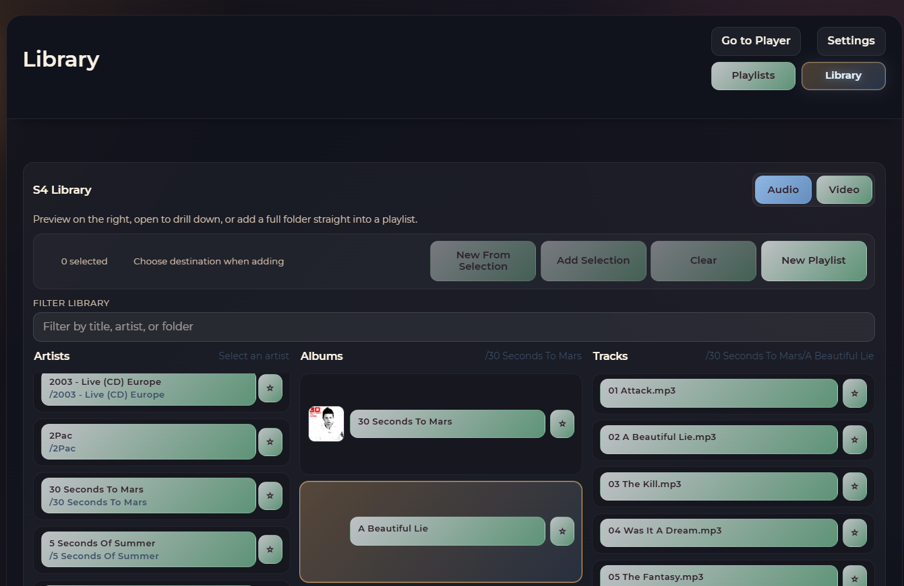
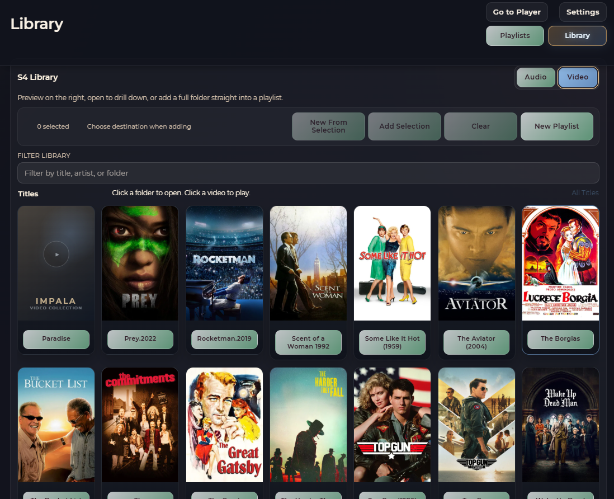
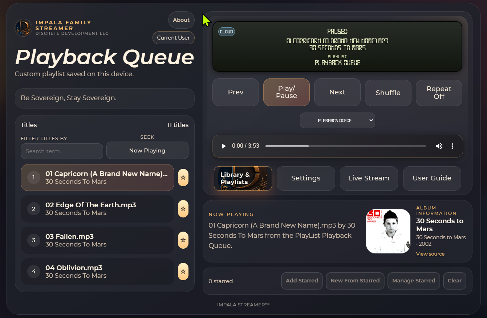

04 / Quick Peek
Designed for the people actually using it.
Every surface is built around clear, logical controls, then refined continuously based on real user feedback.
On the screen
A look at the library, video, and player surfaces.



A tour of the surfaces
Three screens, one consistent logic.
Audio library.
Artists, albums, and tracks organized
the way a personal collection actually gets browsed — not buried
under recommendations you didn't ask for.
Video library.
Movies and shows laid out with the
same visual language as the audio side, so switching between
them never feels like switching apps.
Player & queue.
Playback controls and an
always-visible queue, so what's next is never a guess and
nothing autoplays without your say.
Small details worth noticing
The little things that add up to trust.
Every screen shown here is exactly what a user sees — no sponsored tiles, no upsell banners.
The same playback and navigation patterns hold across audio, video, and the queue, so nothing has to be relearned.
Interface elements stay out of the way until they're needed, keeping the focus on the media itself.
Queue state, library contents, and playback status are always visible — no silent background behavior.
See it live
Pixels are nice. A walkthrough is better.
Screenshots only tell part of the story. Ask for a short live walkthrough to see the library, player, and queue working together in real time.
Ask for a live walkthrough